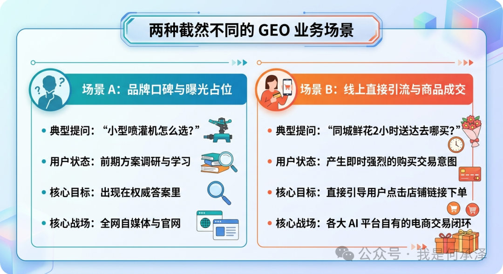
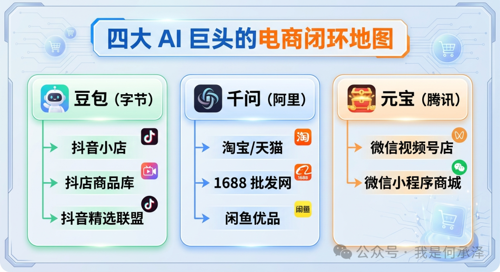
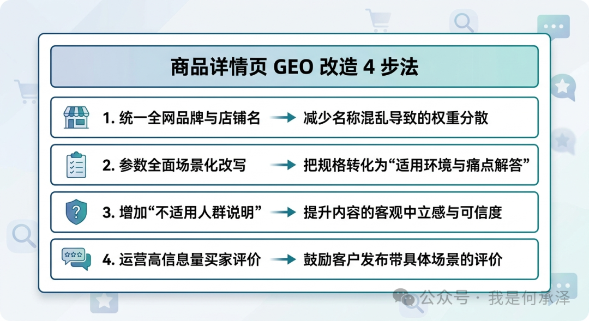
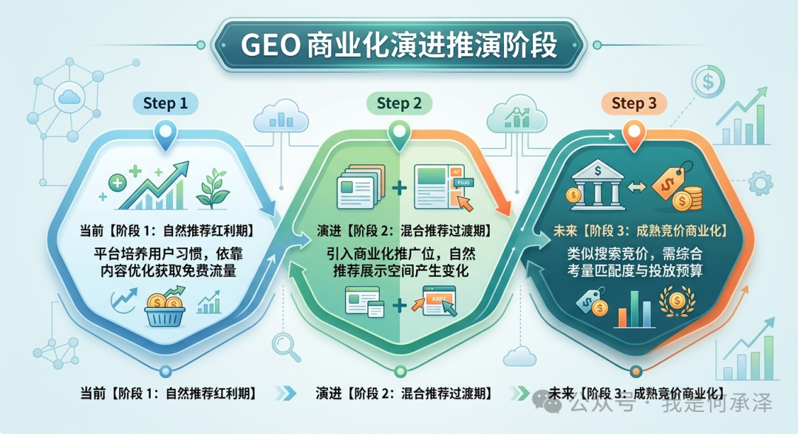

⏱️ 3 分钟速读版
1. 品牌曝光和电商成交在 AI 搜索中遵循完全不同的转化逻辑。
2. 在明确的交易意图下，AI 倾向于推荐母公司生态内的电商店铺，而非外部独立站。
3. 要获得直接的电商流量，需要将店铺开进对应 AI 的“后花园”（如豆包对应抖音商城，千问对应 天猫/淘宝）。
4. 商品详情页改造的四个关键：统一全网品牌名、参数场景化、提供中立的适用性说明、沉淀高质量长评价。
5. 跨平台布局需平衡资源投入与平台政策风险，同时应警惕未来商业化竞价对免费流量的冲击。
大家好，我是何承泽。欢迎来到《企业 GEO 实战指南：如何让 AI 优先推荐你的品牌与产品》系列教程第四讲，写这套教程，就是想用人人都能听懂的大白话，带你搞懂什么是 GEO、它能带来什么商业结果，以及中小企业如何低成本把 GEO 落地。
上一讲我们剖析了四大 AI 搜索平台的信息源偏好，以及“一鱼多吃”的内容制作模式。很多做电商和实体生意的朋友在看完之后，去头条号和公众号发了文章，几天后发现AI确实在回答中提到了自己的品牌，但网店的实际订单转化却并未明显提升。这是为什么呢？
原因是你可能混淆了“品牌曝光”和“电商成交”的路径设计。
在 AI 搜索的世界里，“帮品牌树立口碑” 和 “直接促成商品交易”，往往需要不同的运营策略和布局思路。
今天这一讲，我将为你讲明白这两者的差异。
一、 分清品牌曝光与商品成交
做 GEO 之前，必须先明确你的业务诉求属于以下哪一种场景：

1. 品牌传播型 GEO：主打“心智占位”
• 如果你是做大型工业设备、平台化产品、或者高客单咨询服务，用户的决策周期较长，极少在 AI 聊天框内直接完成支付。
• 此时你的目标是：当用户做前期知识调研时，让 AI 把你的品牌当成“行业标准或参考案例”进行推荐。
• 方法：建设优质的企业独立官网、全网铺设场景化产品文章、获取第三方专业平台和权威媒体的背书。
2. 商品成交型 GEO：需重点布局“巨头商业闭环”
• 如果你是做快消品、生鲜、数码配件、同城生活服务等刚需商品，用户不需要调研，可以直接下单进行交易。
• 此时你得目的是：引导用户进入你的销售渠道，进行交易。
• 经验观察：AI 在交易意图下倾向于向母公司生态内的电商店铺导流。例如千问会直接推荐淘宝的商品购买链接，豆包会推荐抖音电商的购买链接。
• 方法：在相应的平台上开设店铺。例如淘宝店铺，获得千问推荐。
二、 各大 AI 巨头的电商闭环地图与店铺入驻策略
⚡ 经验观察：各大平台的电商闭环引流机制会随着业务战略的调整而演变，以下为近期的普遍模式。
想让某个 AI 平台更直接地为你的网店导流，你需要顺应其生态布局：

1. 想获得【豆包】的电商推荐：深耕抖音电商生态
• 核心动作：开通“抖音小店”，将商品同步至“抖音精选联盟”。
• 机制：当用户在豆包提问并带有购买意图时，豆包有较高概率直接推荐抖音电商的商品卡片，并且请求你完成抖音账号绑定，在豆包里直接完成交易。
2. 想获得【千问】的电商推荐：布局 1688 与淘宝
• 核心动作：
• B2B 工业品与原材料：开通1688店铺，完善现货起订量与规格表；
• C 端消费品：深耕 天猫 / 淘宝店铺，维护良好的店铺评分。
• 机制：千问在获取在线购买意图的提问时，会在回答中直接推荐淘宝或者天猫的产品链接。并且让你完成淘宝的账号绑定，在千问直接完成交易。
3. 想获得【元宝】的电商推荐：接入微信小程序与视频号
• 核心动作：搭建微信小程序官方商城，开通视频号小店并进行企业认证。
• 机制：元宝依托微信生态，在回答消费类问题时，可以直接嵌入微信小程序的路径，引导用户进入交易环节。
⚠️ 跨平台布局风险提示
尽管“全网覆盖”听起来很美好，但实操中跨平台布局存在一定风险：
1. 资源分散风险：多平台运营需要较高的维护成本，在团队精力有限时，容易导致各店铺评分平庸，难以获得 AI 的高权重推荐。
2. 平台规则变动风险：各大平台的闭环策略和 AI 推荐机制仍处于动态调整期，盲目铺摊子可能面临较高的试错成本。
建议：中小企业应根据核心客群画像，优先集中资源打透 1-2 个与自身最契合的生态闭环。
三、 商品详情页的 GEO 改造实操
店铺开好之后，商品详情页的内容质量是 AI 搜索判断商品是否与用户需求匹配的重要依据。
按照以下 “GEO 详情页 4 步改造法”，可以提升商品被 AI 选中的概率：

1. 统一全网品牌名与店铺名（建立清晰的实体映射）
• ❌ 弱关联做法：微信叫“华美定制”，淘宝叫“华美数码店”，抖音叫“华美生活工坊”。
• ✅ 强关联做法：全网统一为“华美智能数码”。让 AI 能够轻松将不同渠道的声量归因到同一主体。
2. 把商品参数做场景化改写
• ❌ 传统罗列：“纯棉面料，克重 220g，透气排汗。”
• ✅ GEO 改写：“220g 纯棉材质：适合夏季 30℃ +的户外活动或通勤，具备较好的吸汗性能，常规机洗不易变形。”
3. 增加“适用与不适用人群说明”
在详情页适度明示产品的边界，有助于提升 AI 对信息质量的评分：
• 【推荐适用】：经常出差、对便携性有较高要求的用户；
• 【谨慎选择】：需要外接多路大型设备的用户。
• 【底层逻辑】：当内容展现出客观的适用边界时，AI 往往会判定该信息更为真实可信，从而在针对性问答中提高其推荐优先级。
4. 沉淀高信息密度的真实买家评价
AI 常会抓取用户评价作为推荐的佐证：
• 引导真实买家描述具体的使用场景（例如：“放在书桌上实测光照均匀，连续写作业 2 小时体验较好”）；
• 这种具体的用户反馈更容易被 AI 提取为特征亮点。
四、 商业化演进前瞻：自然流量窗口期与应对
随着 AI 产品的成熟，商业化进程是必然趋势。我们需要理性看待GEO未来的发展。

• 当下（2026年）：多数 AI 平台仍在积极优化体验和扩大用户基数，处于自然推荐拥有较大空间的流量红利阶段。
• 未来趋势：平台逐步探索“AI 商业推广”是行业共识，纯免费自然推荐的展示比例会受到影响。🔮 趋势预判：具体时间节点取决于各平台商业化推进速度，预计2007年平台会开始尝试商业化。
• 应对建议：趁当前自然获取流量的门槛相对可控时，抓紧沉淀品牌在各大AI库中的正向认知资产。
五、 结尾与预告
GEO不是一套打法通吃。做品牌曝光，重在官网、场景内容与权威背书；做电商成交，则要顺应AI生态，将店铺开设到相应的电商平台上。
至此，我们已经完成了GEO的底层逻辑的讲解，你已经了解了 AI搜索的运转机制与各大平台的商业阵营特性。
接下来我们将进入GEO实操环节——内容与文案篇！
下一讲，我将为你奉上实操框架：《第 05 讲：GEO 内容优化七步法：手把手教你把产品写进 AI 的推荐答案里（附 3 套专用 Prompt 模板）》！
《企业 GEO 实战指南：如何让 AI 优先推荐你的品牌与产品》系列教程：